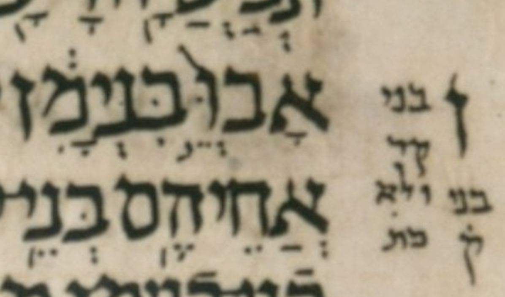

| n | 16 |
| citation:book | Judg |
| citation:c | 20 |
| citation:v | 13 |
| citation:position | 15 |
| author:name | Ben Denckla |
| author:mail | bdenckla@alum.mit.edu |
| author:confirmed | true |
| description | Note that while creating the pointed qere, the transcriber added a dagesh to bet |
| lc:folio | Folio_149A |
| lc:column | 1 |
| lc:line | 8 |
| lc:credit | Credit: Sefaria.org. |
| reftext | בְּנֵ֣י |
| refuni | bet dagesh sheva nun tsere munah yod |
| changetext | בְּנֵ֣י |
| changeuni | bet dagesh sheva nun tsere munah yod |
| notes:note | The manuscript’s pointed ketiv (MPK) is אְׄאֵ֣ׄאׄ. (We use אׄ (א with an extraordinary upper dot) to stand in for a blank space.) |
| notes:note-2 | The MPK has no letter to carry a dagesh for the qere’s ב. The MPK (points on no letters) is sheva, tsere, and munaḥ. |
| notes:note-3 | Why in the margin does it say not only «בני קר ולא כת» but also «בני ק»? |
| notes:note-4 | Although Dotan does not note this word, he notes that the next word has an unexpected dagesh in its ב. I.e., it unexpectedly starts with בּ not ב. i.e. בִנְיָמִ֔ן (Vinyamin) would be expected. |
| transnotes:transnote:action | Add |
| transnotes:transnote:type | a |
| transnotes:transnote:beforetext | XXX fill me in beforetext |
| status | Pending |
| type | NoTextChange |